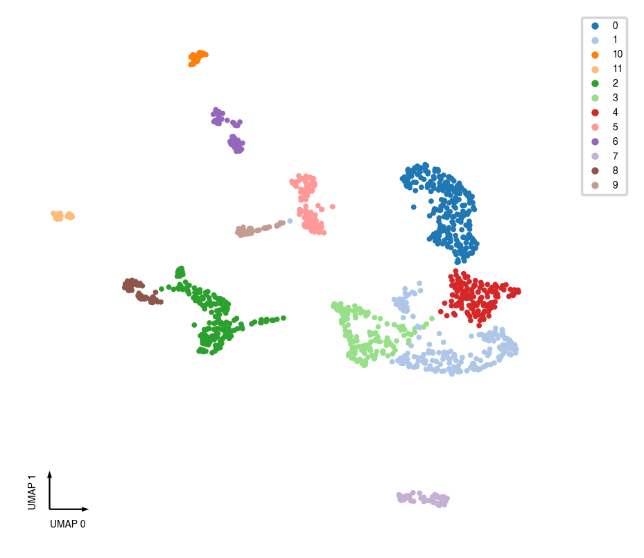
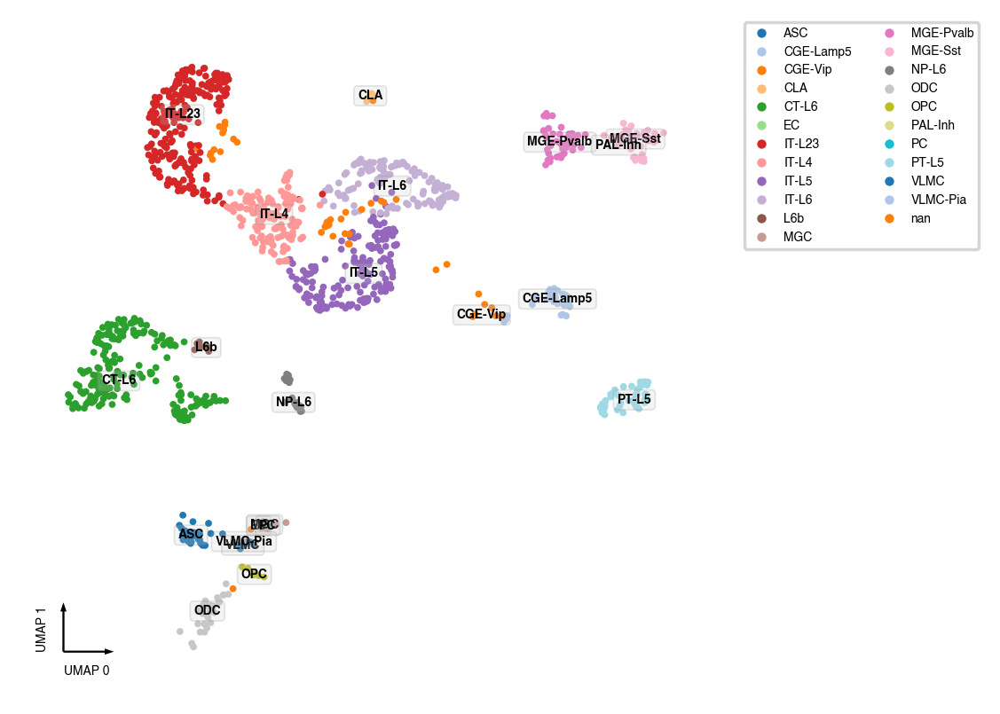
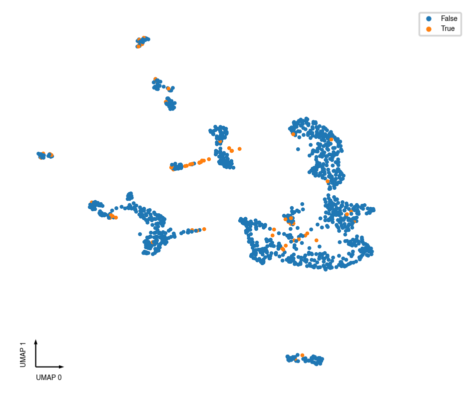

Calculate Cell Doublet Score¶
Content¶
Here we assign a doublet score to each cell. The MethylScrblet method we used here is adapted from the Scrublet package (REF). High doublet score indicates the cell is likely merged from different cell types.
Prerequisite¶
Before this step, run the Basic Clustering Walk-through to get the cell-by-feature AnnData file.
Input¶
MCDS Files (contains chrom100K dim)
Cell Metadata
Output AnnData file from Basic Clustering Walk-through.
Output¶
Cell doublet score
Import¶
import pandas as pd
import matplotlib.pyplot as plt
import seaborn as sns
import anndata
from ALLCools.clustering import MethylScrublet
from ALLCools.plot import *
from ALLCools import MCDS
Parameters¶
# change this to the paths to your MCDS files
mcds_path_list = [
'../../data/MOp/3C-171206.mcds',
]
adata_path = '../basic/MOp.chrom100k-clustering.h5ad'
var_name = 'chrom100k'
load = True
mc_type = 'CHN'
# use feature type
# HVF: all highly variable features
# CEF: cluster enriched features
feature_type = 'CEF'
# Clustering resolution
resolution = 0.3
n_neighbors = 10
expected_doublet_rate=0.08
plot_type = 'static'
Load¶
AnnData with clustering results¶
adata = anndata.read_h5ad(adata_path)
hvf = adata.var_names.astype(int)
hvf.name = var_name
import scanpy as sc
sc.tl.leiden(adata, resolution=0.3)
Raw mC counts¶
mcds = MCDS.open(mcds_path_list, obs_dim='cell', use_obs=adata.obs_names)
mc = mcds['chrom100k_da'].sel({
'mc_type': mc_type,
'count_type': 'mc',
hvf.name: hvf
})
cov = mcds['chrom100k_da'].sel({
'mc_type': mc_type,
'count_type': 'cov',
hvf.name: hvf
})
if load and (mcds.get_index('cell').size <= 20000):
mc.load()
cov.load()
Calculate Doublet Scores¶
scrublet = MethylScrublet(sim_doublet_ratio=2.0,
n_neighbors=n_neighbors,
expected_doublet_rate=expected_doublet_rate,
stdev_doublet_rate=0.02,
metric='euclidean',
random_state=0,
n_jobs=-1)
score, judge = scrublet.fit(mc, cov, clusters=adata.obs[cluster_col_name])
adata.obs['doublet_score'] = score
adata.obs['is_doublet'] = judge
scrublet.plot()
Calculating mC frac of observations...
Simulating doublets...
Cell cluster labels are given, will sample similar number of cells from each cluster.
PCA...
Calculating doublet scores...
Automatically set threshold to 0.01
Detected doublet rate = 5.8%
Estimated detectable doublet fraction = 83.9%
Overall doublet rate:
Expected = 8.0%
Estimated = 7.0%

fig, ax = plt.subplots(figsize=(4, 4), dpi=250)
_ = categorical_scatter(data=adata.obs, ax=ax, coord_base='umap', hue=cluster_col_name, show_legend=True)

fig, ax = plt.subplots(figsize=(4, 4), dpi=250)
_ = continuous_scatter(data=adata.obs, ax=ax, coord_base='umap', hue='doublet_score')

Plots¶
fig, ax = plt.subplots(figsize=(4, 4), dpi=250)
_ = categorical_scatter(data=adata.obs,
ax=ax,
coord_base='umap',
hue='CellTypeAnno',
palette='tab20',
show_legend=True)

fig, ax = plt.subplots(figsize=(4, 4), dpi=250)
_ = continuous_scatter(data=adata.obs, ax=ax, coord_base='umap', hue='doublet_score')

fig, ax = plt.subplots(figsize=(4, 4), dpi=250)
_ = categorical_scatter(data=adata.obs, ax=ax, coord_base='umap', hue='is_doublet', show_legend=True)
